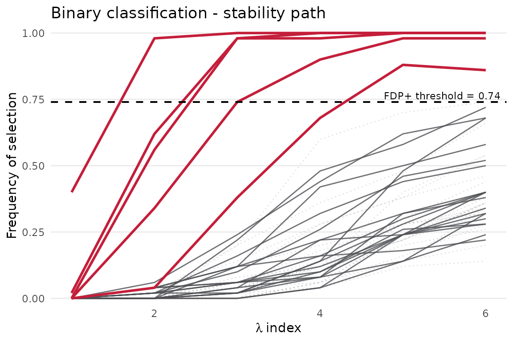
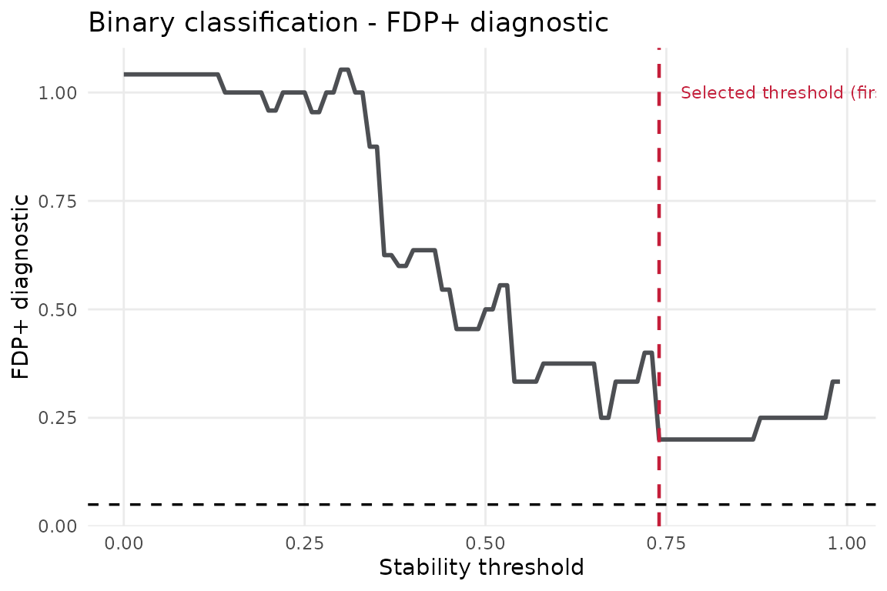
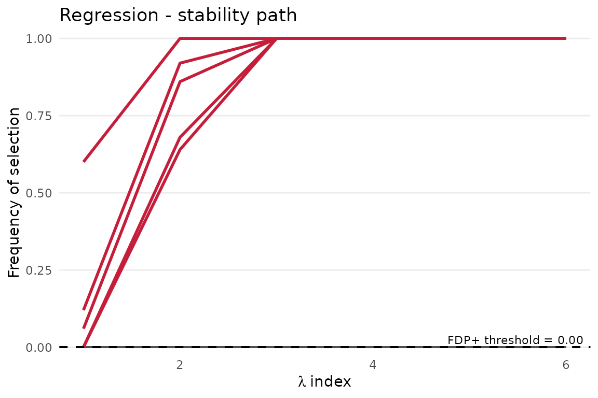
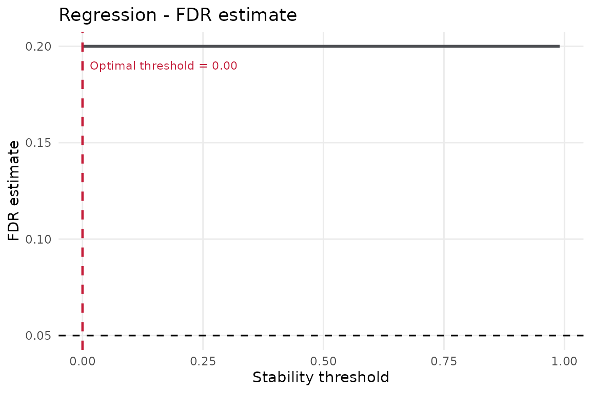

Contents
- 1 Introduction
- 2 Installation
- 3 Scope of the vignette
- 4 Input data format
- 5 Binary classification
- 5.1 Simulated data
- 5.2 Fitting STABL
- 5.3 Inspecting the results
- 5.4 Visualisation
- 6 Regression
- 6.1 Simulated data
- 6.2 Fitting STABL
- 6.3 Results
- 6.4 Visualisation
- 7 Alternative base learners
- 7.1 Adaptive lasso
- 7.2 Elastic net
- 8 Interpretation of the FDP+ estimate
- 9 Next steps
1 Introduction
In high-dimensional biomarker screens, candidate variables usually outnumber samples. A sparse model returns a short list of features. But a single fit does not show whether the list is stable. The list can be an artifact of one particular sample.
STABL (Stability-based Thresholding and Aggregation for Biomarker discovery via LASSO) turns this one-shot question into a repeated experiment. The method resamples the data. It fits a sparse learner across a penalty grid. It records how often each feature is selected. It then calibrates the result against artificial decoy features. The central object is a frequency, not a coefficient vector. The frequency is the proportion of perturbed datasets in which a feature survives.
The stablr package is native R. It has no Python
runtime. It builds on the glmnet ecosystem. This vignette
uses small simulated datasets, random-permutation decoys, and modest
bootstrap counts. The examples then stay quick enough for routine
package builds.
The workflow consists of four steps:
- Prepare a numeric feature matrix
xand an outcome vectory. - Build a lambda grid with
auto_lambda_grid(). - Fit STABL with
stabl_fit(). - Inspect selected features, stability scores, and diagnostic plots.
The fitted object is a ranked feature-selection result, not a prediction model. It records which features cross the stability threshold. It records how often each feature was selected. It also records how those selections compare with the decoys.
2 Installation
The following command installs the package from the repository root after cloning.
# Interactive installation protocol; not a package API example.
# From the repository root after cloning:
devtools::install(".")Attach the package to the R session as follows.
3 Scope of the vignette
This vignette is the entry point to the package. It covers the single-omic case:
- preparing the input objects expected by
stabl_fit(); - building a compact penalty grid with
auto_lambda_grid(); - fitting a small binary or regression example;
- extracting selected feature names
(
get_feature_names()), logical support masks (get_support()), and stability scores (get_importances()); - reading the stability-path and FDP diagnostic plots;
- switching between lasso, adaptive lasso, and elastic-net base learners.
4 Input data format
The method expects ordinary R objects. Samples occupy rows. Features occupy columns. The outcome aligns to the same sample order.
| Object | Expected shape | Notes |
|---|---|---|
x |
numeric matrix or matrix-like object, samples in rows and features in columns | Column names become feature names in output. |
y |
outcome vector with one value per row of x
|
Use 0/1 or a factor-like outcome for
family = "binomial"; use numeric values for
family = "gaussian". |
lambda_grid |
data frame returned by auto_lambda_grid()
|
Each row defines a sparse model setting evaluated during bootstrapping. |
If x has row names and y has names, both
must contain the same unique sample identifiers. Their order can differ.
stablr aligns the outcome to predictor rows by identifier.
A silent sample mismatch is worse than a model error. A mismatch can
look entirely plausible.
5 Binary classification
5.1 Simulated data
The first experiment is binary classification. The simulation has a
known truth: 120 samples, 24 candidate features, and only five real
signals (B1 to B5). The remaining features are
noise. The question is whether stability selection recovers the planted
features.
n_bin <- 120; p_bin <- 24; n_signal_bin <- 5
signal_features_bin <- paste0("B", seq_len(n_signal_bin))
X_bin <- matrix(rnorm(n_bin * p_bin), nrow = n_bin,
dimnames = list(paste0("s", seq_len(n_bin)),
paste0("B", seq_len(p_bin))))
# True signal in B1-B5; all other features are independent noise.
beta_bin <- c(rep(1.8, n_signal_bin), rep(0, p_bin - n_signal_bin))
log_odds <- X_bin %*% beta_bin
y_bin <- rbinom(n_bin, size = 1, prob = plogis(log_odds))
names(y_bin) <- rownames(X_bin)
table(y_bin)
#> y_bin
#> 0 1
#> 62 58
signal_features_bin
#> [1] "B1" "B2" "B3" "B4" "B5"The table() output gives a quick check on class balance.
A badly imbalanced screen can still be useful. But interpret its
selected features with more care.
5.2 Fitting STABL
The fit has two steps. First, auto_lambda_grid() obtains
a data-dependent penalty path from glmnet. Each grid row
becomes one sparse model configuration. Second, stabl_fit()
repeats the fit across bootstrap samples. It counts feature
selections.
The main arguments are:
| Argument | What it does |
|---|---|
family |
Passed to glmnet; "binomial" for 0/1
outcome, "gaussian" for continuous. |
n_bootstraps |
Number of bootstrap resamples. The examples use 40-50; final analyses usually need hundreds. |
artificial_type |
Decoy feature type used for FDP calibration. |
random_state |
Integer seed for full reproducibility. |
Supported artificial-feature settings are:
| Value | Meaning |
|---|---|
"random_permutation" |
Column-permuted decoys; no optional dependency. |
"knockoff" |
Fixed-X knockoffs via the optional knockoff
package. |
"knockoff_equi" |
Model-X equicorrelated Gaussian knockoffs. |
"knockoff_mvr" |
Model-X MVR Gaussian knockoffs. |
NULL |
No artificial features; FDP diagnostics are unavailable. |
All knockoff modes fail closed above 3,000 predictors. The package does not claim a globally valid chunked construction. Random-permutation controls do not have that dimensional restriction.
Scalar tuning arguments such as n_bootstraps and
random_state must be finite integer-like scalars. Plot
titles, output paths, and file-format arguments must be non-empty
character scalars.
The example uses n_bootstraps = 50. It keeps the
strong-penalty end of a 20-point lambda path. This keeps the runtime
short and the selected set compact. Lower penalties admit more features.
That helps diagnostics. But it can hide a small planted signal in a
short run. Final analyses should use more bootstrap resamples. They
should also verify that the selections are not an artifact of one narrow
grid.
We fit the model with 50 bootstrap replicates and random-permutation decoys.
lambda_bin_full <- auto_lambda_grid(
X_bin, y_bin, family = "binomial", n_lambda = 20
)
lambda_bin <- lambda_bin_full[seq_len(6), , drop = FALSE]
fit_bin <- stabl_fit(
x = X_bin,
y = y_bin,
lambda_grid = lambda_bin,
family = "binomial",
n_bootstraps = 50L,
artificial_type = "random_permutation",
random_state = 42L
)
fit_bin
#> <stabl_fit>
#> Features in: 24
#> Features selected: 5
#> Min FDP+: 0.2
#> FDP+ threshold: 0.74
#> Artificial: random_permutationThe printed summary reports three key numbers:
-
Stability threshold — the minimum selection
frequency for a biomarker call. For example,
0.7means selected in 70% of bootstraps. - n selected — features that pass the threshold. For the 5-signal data, expect a small number close to 5.
-
FDP+ estimate — an estimated upper bound on the
false-discovery proportion among selected features. With five planted
signals and the additive
+1correction, a perfect five-feature selection has the best value1 / 5 = 0.2. Larger real analyses can support smaller values.
On real data, these numbers are a screening summary, not a verdict. The most convincing fits have three properties. The selected set has a plausible size. The stability scores show a visible gap between selected and unselected features. The features survive domain review.
5.3 Inspecting the results
get_feature_names() returns the selected biomarker
names. get_support() returns the same decision as a named
logical vector. Use it to subset the original matrix.
get_importances() keeps the fuller story: a stability score
for every feature, sorted from most to least persistent.
The data are simulated. So you can compare the selected set with the planted truth. In a real experiment, use three analogous evidence sources: independent validation, biological mechanism, and the shape of the stability-score gap.
# Features selected at the STABL threshold
selected_bin <- get_feature_names(fit_bin)
selected_bin
#> [1] "B1" "B2" "B3" "B4" "B5"
# Subset new data to the selected columns
X_bin_selected <- transform_stabl(fit_bin, X_bin)
dim(X_bin_selected)
#> [1] 120 5
# Compare the selected set against the known simulation truth
setdiff(signal_features_bin, selected_bin) # missed planted features
#> character(0)
setdiff(selected_bin, signal_features_bin) # selected noise features
#> character(0)
# Stability scores for all features (sorted descending)
head(get_importances(fit_bin), 10)
#> B1 B2 B3 B4 B5 B6 B7 B8 B9 B10
#> 1.00 0.88 0.98 1.00 1.00 0.72 0.30 0.22 0.68 0.52The two setdiff() calls are a luxury of simulation. They
show the task of STABL: separate repeatable signal from features that
look good in one fit only.
5.4 Visualisation
In the stability path, each curve is the selection frequency of one
feature along the lambda path. A useful fit shows a small group of
curves that lift away from the background. In this simulation,
B1 to B5 should form that upper band.
plot_stabl_path(fit_bin, title = "Binary classification - stability path")
The plotting helpers return ordinary ggplot objects. You
can display, modify, or save the same figure.
You can write the stability path to file as follows.
# Optional file writing; plot contract exercised by test-phase7.R.
path_plot <- plot_stabl_path(fit_bin, title = "Binary classification - stability path")
ggplot2::ggsave("stability-path.png", path_plot, width = 7, height = 5)The FDP+ diagnostic is drawn with plot_fdr_graph(). The
function keeps its historical name. The plotted quantity is FDP+. At
threshold t, the numerator is the
artificial-feature exceedance count, adjusted for the injected
proportion, plus one. The denominator is the real-feature exceedance
count, bounded below by one. The fitted threshold is the first grid
value with the minimum FDP+. The vertical dashed line marks that
threshold. The horizontal line is a visual target only. In this
five-signal simulation, the FDP+ lower bound is
1 / 5 = 0.2. The graph is a calibration diagnostic, not a
universal false-discovery guarantee.
plot_fdr_graph(fit_bin, title = "Binary classification - FDP+ diagnostic")
You can also write the diagnostic to file.
# Optional file writing; plot contract exercised by test-phase7.R.
fdr_plot <- plot_fdr_graph(fit_bin, title = "Binary classification - FDP+ diagnostic")
ggplot2::ggsave("fdr-graph.png", fdr_plot, width = 7, height = 5)6 Regression
6.1 Simulated data
Regression replaces class membership with a continuous outcome. The
structure stays the same. The simulation plants a known signal and adds
noise. STABL finds the features that recur across resamples. The true
features here are R1 to R5.
n_reg <- 160; p_reg <- 24; n_signal_reg <- 5
signal_features_reg <- paste0("R", seq_len(n_signal_reg))
X_reg <- matrix(rnorm(n_reg * p_reg), nrow = n_reg,
dimnames = list(paste0("s", seq_len(n_reg)),
paste0("R", seq_len(p_reg))))
beta_reg <- c(rep(3, n_signal_reg), rep(0, p_reg - n_signal_reg))
signal_reg <- as.numeric(X_reg %*% beta_reg)
y_reg <- signal_reg + rnorm(n_reg, sd = 0.5)
names(y_reg) <- rownames(X_reg)
signal_features_reg
#> [1] "R1" "R2" "R3" "R4" "R5"The printed vector names the five planted features.
6.2 Fitting STABL
The code mirrors the binary example. To move from classification to
regression: change family, rebuild the lambda grid for the
new outcome, and refit.
lambda_reg_full <- auto_lambda_grid(
X_reg, y_reg, family = "gaussian", n_lambda = 20
)
lambda_reg <- lambda_reg_full[seq_len(6), , drop = FALSE]
fit_reg <- stabl_fit(
x = X_reg,
y = y_reg,
lambda_grid = lambda_reg,
family = "gaussian",
n_bootstraps = 50L,
artificial_type = "random_permutation",
random_state = 42L
)
fit_reg
#> <stabl_fit>
#> Features in: 24
#> Features selected: 5
#> Min FDP+: 0.2
#> FDP+ threshold: 0
#> Artificial: random_permutationAs in the binary case, the printed summary reports the stability threshold, the number of selected features, and the FDP+ estimate.
6.3 Results
The strongest scores should concentrate on R1 to
R5. Their exact scores need not match the binary example.
The Gaussian loss changes the effective sparsity of each bootstrap
model.
selected_reg <- get_feature_names(fit_reg)
selected_reg
#> [1] "R1" "R2" "R3" "R4" "R5"
setdiff(signal_features_reg, selected_reg) # missed planted features
#> character(0)
setdiff(selected_reg, signal_features_reg) # selected noise features
#> character(0)
head(get_importances(fit_reg), 10)
#> R1 R2 R3 R4 R5 R6 R7 R8 R9 R10
#> 1 1 1 1 1 0 0 0 0 0The selected feature names are the thresholded screening result. The full importance vector is often just as useful. Features just below the threshold can suggest a continuum, not a sharp boundary.
6.4 Visualisation
The stability path should echo the binary case. The planted features lift away from the background. Differences in curve height reflect the model family. The definition of stability does not change.
plot_stabl_path(fit_reg, title = "Regression - stability path")
The FDP+ diagnostic completes the parallel with the binary case.
plot_fdr_graph(fit_reg, title = "Regression - FDP+ diagnostic")
7 Alternative base learners
The default base learner is the lasso. Other sparse learners help when the geometry of the feature space changes. The examples reuse the binary simulation. The learner choice is then the only varying factor.
7.1 Adaptive lasso
The adaptive lasso re-weights the L1 penalty. Features with small coefficients in a preliminary ridge fit get heavier penalties. This can sharpen the contrast between persistent signal and unstable noise.
Prefer the adaptive lasso when you expect a sparse true signal and
want a tighter biomarker list with fewer borderline features. Features
B1 to B5 should stay among the
strongest-ranked. get_importances() typically gives higher
scores for true features than plain lasso. Borderline noise features can
still appear. This variant uses a broader introductory lambda grid.
lambda_ada <- auto_lambda_grid(X_bin, y_bin, family = "binomial", n_lambda = 10)
fit_ada <- stabl_fit(
x = X_bin,
y = y_bin,
lambda_grid = lambda_ada,
base_learner = "adaptive_lasso",
family = "binomial",
n_bootstraps = 40L,
artificial_type = "random_permutation",
random_state = 42L
)
get_feature_names(fit_ada)
#> [1] "B1" "B2" "B3" "B4" "B5" "B6" "B9" "B16"
sum(get_support(fit_ada))
#> [1] 8The count from sum(get_support(fit_ada)) shows how
compact the selected set has become.
get_importances(fit_ada) retains the full ranking.
7.2 Elastic net
Elastic net interpolates between the lasso (alpha = 1)
and ridge (alpha = 0). The L2 component lets the model
select correlated features together. This helps when biomarkers form
modules, not isolated hits.
Pass multiple l1_ratio values to
auto_lambda_grid(). STABL then sweeps the (lambda, alpha)
grid jointly. Every bootstrap explores the sparsity level and the L1/L2
mix. Prefer elastic net over plain lasso when features are highly
correlated. It avoids choosing one arbitrary representative from a
correlated group.
lambda_en <- auto_lambda_grid(
X_bin, y_bin,
family = "binomial", n_lambda = 8,
l1_ratio = c(0.5, 0.9)
)
fit_en <- stabl_fit(
x = X_bin,
y = y_bin,
lambda_grid = lambda_en,
base_learner = "elastic_net",
family = "binomial",
n_bootstraps = 40L,
artificial_type = "random_permutation",
random_state = 42L
)
get_feature_names(fit_en)
#> [1] "B1" "B3" "B4" "B5" "B6" "B22"The printed names are the features selected by the elastic-net fit.
7.3 Choosing a base learner: what the benchmarks show
The bundled learner benchmark
(benchmarks/learner_comparison/) measures how each learner
and decoy pairing controls the false discovery proportion on simulated
binomial data (n = 240, p = 150, 10 planted signals, 10 seeds; 5 for the
random forests). The number to read is the calibration ratio: realized
FDP divided by the reported FDP+ estimate. A ratio near 1 is honest,
above 1 is anti-conservative, below 1 is conservative. Read these as
measured evidence for this design, not as guarantees for yours.
| Base learner | Decoys | Calibration (indep. / block) | Guidance |
|---|---|---|---|
lasso |
random_permutation |
1.08 / 0.92 | Calibrated fast default. |
elastic_net |
random_permutation |
1.00 / 0.95 | Calibrated; prefer for correlated features. |
adaptive_lasso |
random_permutation |
1.00 / 0.52 | Calibrated to conservative; tighter lists. |
splsda |
random_permutation |
1.00 / 1.00 | Best-calibrated classification pairing. |
sparse_group_lasso |
knockoff_equi |
1.00 / 0.97 | Calibrated with the highest power, but realized FDP 0.85-0.91: a screening pairing, not a short list. |
rf |
knockoff_equi |
0.92 / 0.96 | Calibrated. rf with random_permutation is
not (1.25 / 1.50). |
oblique_rf (retired in 1.0.0) |
either | 0.75-1.75 | Failed the predeclared calibration bar (WS-3); use
rf. |
lasso, elastic_net,
adaptive_lasso
|
knockoff_equi |
1.05-2.00 | Anti-conservative for the glmnet family. Treat FDP+ as a diagnostic only. |
Two rules follow from the table. First, for the glmnet-family
learners and splsda, random_permutation is the
calibrated pairing in this benchmark while knockoff_equi is
anti-conservative; the reverse holds for the random forest. Second, read
every FDP+ estimate against the design of your own data. The benchmarks
are simulations. No benchmark proves calibration on your dataset. The
gaussian-outcome extension and the full per-seed tables accompany the
benchmark scripts (lb_gauss_summary.csv,
lb_summary.csv).
8 Interpretation of the FDP+ estimate
stabl_fit() chooses its stability threshold by
minimizing an FDP+ surrogate. At each candidate threshold, it estimates
the false-discovery proportion among selected features from the decoy
features. It keeps the first minimizer along the grid. Three caveats
apply:
-
Not a universal FDR guarantee. The fitted threshold
minimizes an observed diagnostic curve. Neither it nor the plotted
fdr_targetline controls false discoveries by construction. - Calibration depends on fair null competitors. The FDP+ estimate is only as good as the artificial features. The decoys must behave as exchangeable nulls for the real features under the base learner. Poorly matched decoys distort the estimate.
-
FDRs_/min_fdr_are names, not promises. These fitted fields keep their historical Python-parity names. They contain FDP+ estimates, not guaranteed false-discovery rates.
9 Next steps
This vignette covered the core idea. Repeat the sparse fit. Count what survives. Calibrate that survival against decoys. The following extensions are available:
- Use more bootstraps for final analyses, typically hundreds rather than the small values used here.
- Use
vignette("stablr-getting-started")for the high-levelstabl()wrapper, which fixes safe defaults for the expert arguments shown here. - For classification with an sPLS-DA base learner, set
base_learner = "splsda"; for random forests,base_learner = "rf". - Use
vignette("stablr-multiomic")when the data contain multiple omic views. - Use
?save_stabl_resultsto export scores, plots, and selected-feature tables to disk.